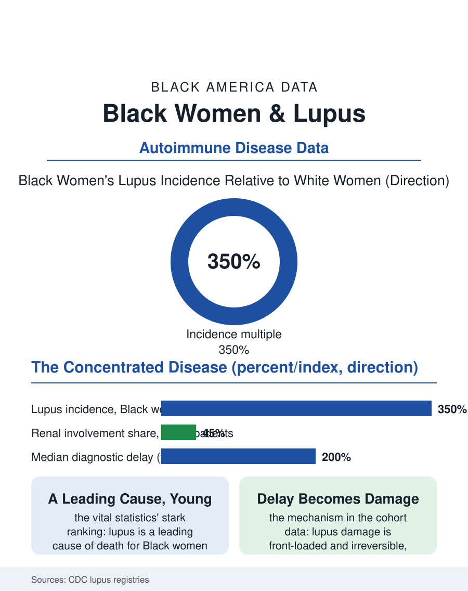

Black Public Health
The Young Woman's Disease: Black Women and Lupus
Three to four times the incidence, younger onset, a leading cause of death for young Black women, and damage compounded by diagnostic delay. The lupus file.

Lupus, systemic lupus erythematosus, is among the most racially concentrated diseases in American medicine: Black women develop it at three to four times the rate of white women, develop it younger, and die of it at rates and ages that make it a leading cause of death for young Black women in the mortality tables, a position almost no other chronic disease occupies. This article reads the lupus file.
The Young Woman's Disease
The epidemiology is the file's stark foundation: the population-based registries the CDC funded in the recent era, in Georgia and Michigan and California, count lupus incidence in Black women at the highest of any demographic group the surveillance covers, prevalence running several hundred per hundred thousand, with the onset concentrated in the twenties and thirties, the childbearing years, so that the disease's calendar collides exactly with the family formation file's. The severity distribution follows the incidence: Black patients in the registry and cohort data develop the renal form, lupus nephritis, at higher rates, progress to kidney failure at higher rates and younger ages, and accumulate the organ damage scores faster, the damage index being the cohort literature's grim accounting unit. The mortality tables then state the outcome in the form the file cannot soften: lupus appears among the leading causes of death for Black women in the fifteen-to-forty-four age bands in the vital statistics analyses, a ranking no other autoimmune disease approaches, in an age group whose deaths the mortality file otherwise assigns to the external causes. The fatigue that anchors the symptom list deserves its own line in the file, because it is the symptom the workplace and the family most readily discount and the one the patients rank first, a exhaustion that sleep does not repair and that the flare's approach announces before the labs confirm it.
Diagnosis Delayed, Damage Compounded
The diagnostic file repeats the section's signature with lupus's own variations: the disease's protean presentation, fatigue, joint pain, rashes, fevers, the great imitator's itinerary through the primary care file, resolves into diagnosis after delays the patient surveys measure in years, the delay longer for the Black patient whose symptoms meet the encounter's documented discounts, the rash on dark skin misread by the training atlas of the dermatology file, the pain discounted in the pattern of the chronic pain file. The damage accrual during the delay is the cohort data's mechanism: lupus damage is substantially front-loaded and irreversible, the kidneys and the brain and the blood vessels recording the untreated inflammation permanently, so that the diagnosis's timing is the prognosis in a sense few diseases match, and the delay's racial distribution writes itself into the damage scores the registries compare a decade later. The treatment ladder above the diagnosis is the modern rheumatology armamentarium, the antimalarials that are the disease's backbone, whose adherence in the pharmacy data runs lowest in the population that needs them most, the immunosuppressants, the biologics whose specialty pharmacy costs reproduce the access file, and the transplant and dialysis termini of the renal progression, the lupus patient joining the kidney file's lists in the prime of life.
The Invisible Workforce of One Disease
The lupus file closes on the life built around the disease, because lupus is a young woman's decades-long negotiation: the flare's unpredictability against the job's schedule and the children's needs, the sun sensitivity against the outdoor life, the pregnancy's high-risk management in the maternal file's clinics, the disability application's documentation of a disease whose worst days leave no imaging. The support infrastructure is the community's own in the file's usual pattern, the lupus organizations' Black chapters and the online communities where the young patients, who are disproportionately women who look like each other, conduct the disease's real education, the veteran patient's flare literacy exceeding the newly diagnosed's clinical instruction in the survey data's own assessment. The research file offers the closing trend: the therapy pipeline's recent approvals and the registries' own existence are the system's late attention arriving, the trials' enrollment, per the trials file's rule, being the measure of whether the new drugs' evidence will describe the population that bears the disease. The registries count the cases in the hundreds per hundred thousand Black women. The file's last entry is the age band's: a disease that kills women in their twenties and thirties, at multiples, invisibly to the public file, has earned its surveillance late and its urgency, in the data's plain arithmetic, first.
More in Black Public Health
Hypertension Among Black Adults: Prevalence, Control, and Consequences
About 55 percent of Black adults have hypertension — the highest rate of any U.S. group. Prevalence, onset, control, and the stroke, heart, and kidney consequences in the data.
Diabetes Among Black Adults: Prevalence and Complications
Nearly one in five Black adults has diabetes, diagnosed or undiagnosed — and its complications fall with particular weight. The CDC data on prevalence, control, and outcomes.
Black Life Expectancy: The Gap at Birth and Its Causes
Black life expectancy at birth is about 73 years, roughly five years below the national figure — the summary measure of every health gap in this section. The CDC data.
Source: Centers for Disease Control and Prevention, population-based lupus registries; lupus cohort and damage index literature.